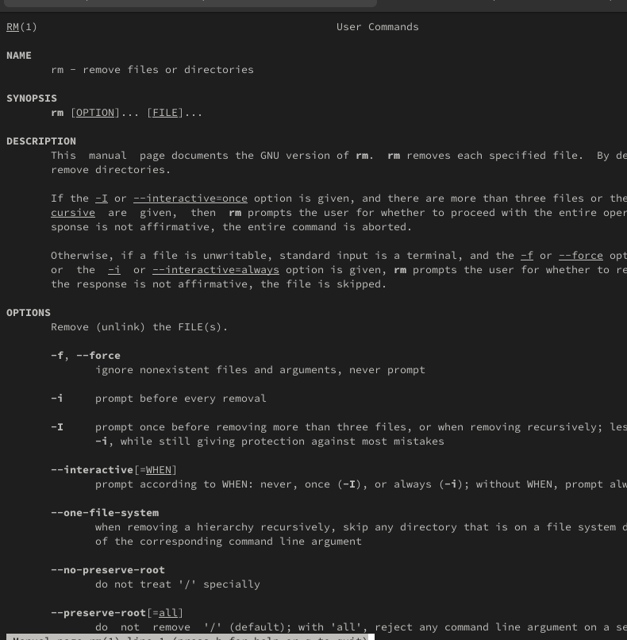
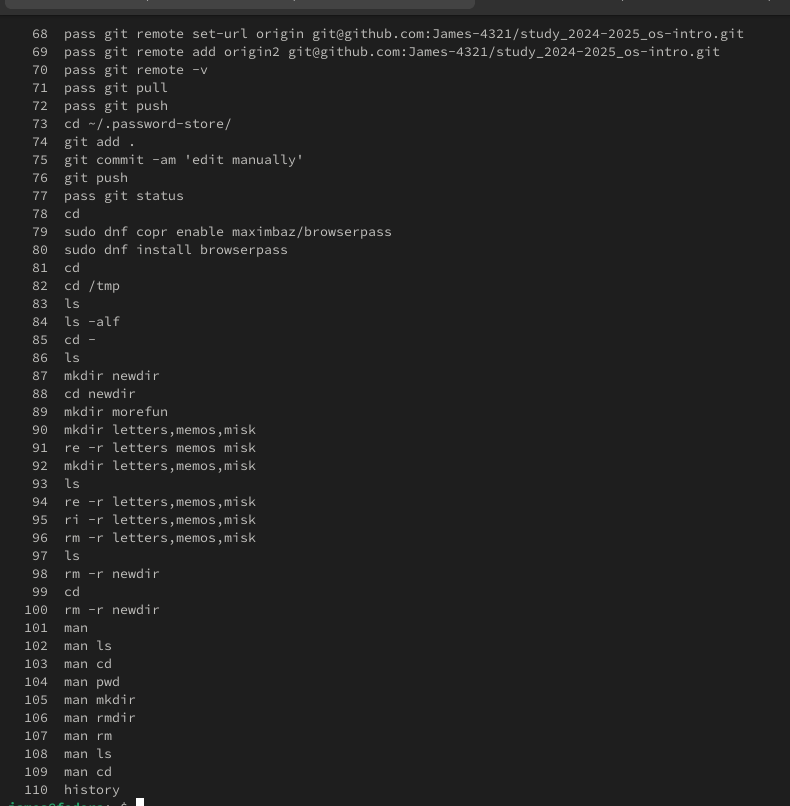

lang: ru-RU title: Лабораторная работа № 6 subtitle: Архитектура
компьютера, раздел Операционные системы author: - Кусоро М.Дж.
institute: - Российский университет дружбы народов, Москва, Россия
Приобретение практических навыков взаимодействия пользователя с
системой посредством командной строки.
Задание
Определите полное имя вашего домашнего каталога. Далее относительно
этого каталога будут выполняться последующие упражнения.
Выполните следующие действия: 2.1. Перейдите в каталог
/tmp. 2.2. Выведите на экран содержимое каталога
/tmp. Для этого используйте команду ls с
различными опциями. Поясните разницу в выводимой на экран информации.
2.3. Определите, есть ли в каталоге /var/spool подкаталог с
именем cron? 2.4. Перейдите в ваш домашний каталог и
выведите на экран его содержимое. Определите, кто является владельцем
файлов и подкаталогов?
Выполните следующие действия: 3.1. В домашнем каталоге создайте
новый каталог с именем newdir. 3.2. В каталоге
~/newdir создайте новый каталог с именем
morefun. 3.3. В домашнем каталоге создайте одной командой
три новых каталога с именами letters, memos,
misk. Затем удалите эти каталоги одной командой. 3.4.
Попробуйте удалить ранее созданный каталог ~/newdir
командой rm. Проверьте, был ли каталог удалён. 3.5. Удалите
каталог ~/newdir/morefun из домашнего каталога. Проверьте,
был ли каталог удалён.
С помощью команды man определите, какую опцию команды
ls нужно использовать для просмотра содержимого не только
указанного каталога, но и подкаталогов, входящих в него.
С помощью команды man определите набор опций команды
ls, позволяющий отсортировать по времени последнего
изменения выводимый список содержимого каталога с развёрнутым описанием
файлов.
Используйте команду man для просмотра описания
следующих команд: cd, pwd, mkdir,
rmdir, rm. Поясните основные опции этих
команд.
Используя информацию, полученную при помощи команды
history, выполните модификацию и исполнение нескольких
команд из буфера команд.
Теоретическое введение
В операционной системе типа Linux взаимодействие пользователя с
системой обычно осуществляется с помощью командной строки посредством
построчного ввода команд. При этом обычно используются командные
интерпретаторы языка shell: /bin/sh, /bin/csh,
/bin/ksh. Формат команды:
<имя_команды><разделитель><аргументы>.
Выполнение лабораторной
работы
Определим полное имя домашнего каталога. Перейдем в каталог
/tmp. Выведем на экран содержимое каталога
/tmp. Для этого используем команду ls с
различными опциями.
pwdls с опциямиls с опциями
Перейдите в ваш домашний каталог и выведите на экран его содержимое.
Владелец файлов — я.
Содержимое домашнего
каталога
В домашнем каталоге создадим новый каталог с именем
newdir. В каталоге ~/newdir создадим новый
каталог с именем morefun.
Создание каталогов
В домашнем каталоге создадим одной командой три новых каталога с
именами letters, memos, misk.
Затем удалим эти каталоги.
Создание каталогов
Попробуем удалить ранее созданный каталог ~/newdir
командой rm. Проверим, был ли каталог удалён. Удалим
каталог ~/newdir/morefun из домашнего каталога.
Удаление каталога
С помощью команды man определим, какую опцию команды
ls нужно использовать для просмотра содержимого не только
указанного каталога, но и подкаталогов, входящих в него.
ls - Rls –time-style
Используем команду man для просмотра описания следующих
команд: cd, pwd, mkdir,
rmdir, rm.
cdpwdmkdir

rmdirrm
Используя информацию, полученную при помощи команды
history, выполним модификацию и исполнение нескольких
команд из буфера команд.

history
Контрольные вопросы
Что такое командная строка? Командная строка (или «консоль») – это
текстовый интерфейс между человеком и компьютером, в котором инструкции
компьютеру даются путём ввода с клавиатуры текстовых строк (команд).
Интерфейс командной строки противопоставляется управлению программами на
основе меню, а также различным реализациям графического интерфейса.
Команды, введённые пользователем, интерпретируются и выполняются
специальной программой — командной оболочкой (или «shell»
по-английски).
При помощи какой команды можно определить абсолютный путь текущего
каталога? Приведите пример. Для определения абсолютного пути к текущему
каталогу используется команда pwd (print working directory). Пример
(абсолютное имя текущего каталога пользователя dharma): (pwd результат:
/afs/dk.sci.pfu.edu.ru/home/d/h/dharma)
При помощи какой команды и каких опций можно определить только тип
файлов и их имена в текущем каталоге? Приведите примеры. При помощи
команды ls -F. (ls -F install-tl-unx/ newdir/ work/ Видео/ Документы/
Загрузки/ Изображения/ Музыка/ Общедоступные/ ‘Рабочий стол’/
Шаблоны/)
Каким образом отобразить информацию о скрытых файлах? Приведите
примеры. С помощью команды ls -a. (ls -a . .bash_logout .cache .gnupg
.local .pki .var .vboxclient-draganddrop.pid .wget-hsts Документы Музыка
Шаблоны .. .bash_profile .config install-tl-unx .mozilla .ssh
.vboxclient-clipboard.pid .vboxclient-seamless.pid work Загрузки
Общедоступные .bash_history .bashrc .gitconfig .lesshst newdir
.texlive2022 .vboxclient-display-svga-x11.pid .vscode Видео Изображения
‘Рабочий стол’)
При помощи каких команд можно удалить файл и каталог? Можно ли это
сделать одной и той же командой? Приведите примеры. Команда rm
используется для удаления файлов и/или каталогов. Чтобы удалить каталог,
содержащий файлы, нужно использовать опцию r. Без указания этой опции
команда не будет выполняться (rm -r abc). Если каталог пуст, то можно
воспользоваться командой rmdir. Если удаляемый каталог содержит файлы,
то команда не будет выполнена — нужно использовать rm - r
имя_каталога.
Каким образом можно вывести информацию о последних выполненных
пользователем командах? работы? С помощью команды history.
Как воспользоваться историей команд для их модифицированного
выполнения? Приведите примеры. Можно модифицировать команду из
выведенного на экран списка при помощи следующей конструкции:
!<номер_команды>:s/<что_меняем>/<на_что_меняем> (!3:s/a/F ls -F)
Приведите примеры запуска нескольких команд в одной строке. Если
требуется выполнить последовательно несколько команд, записанный в одной
строке, то для этого используется символ точка с запятой. (cd; ls)
Дайте определение и приведите примера символов экранирования. Если в
заданном контексте встречаются специальные символы (типа «.», «/», «*» и
т.д.), надо перед ними поставить символ экранирования (обратный
слэш).
Охарактеризуйте вывод информации на экран после выполнения команды
ls с опцией l. Чтобы вывести на экран подробную информацию о файлах и
каталогах, необходимо использовать опцию l. При этом о каждом файле и
каталоге будет выведена следующая информация: – тип файла, – право
доступа, – число ссылок, – владелец, – размер, – дата последней ревизии,
– имя файла или каталога.
Что такое относительный путь к файлу? Приведите примеры
использования относительного и абсолютного пути при выполнении
какой-либо команды. Относительный путь — это ссылка, указывающая на
другие страницы вашего сайта относительно веб-страницы, на которой эта
ссылка уже находится. Пример относительно пути: ./docs/files/file.txt
Пример абсолютного пути: cd /home/dmbelicheva/work/study
Как получить информацию об интересующей вас команде? С помощью
команды hepl.
Какая клавиша или комбинация клавиш служит для автоматического
дополнения вводимых команд? Клавиша Tab.
Выводы
Мы приобрели практические навыки взаимодействия пользователя с
системой посредством командной строки.
Список литературы
Настройка электронной среды. (электронный ресурс) URL:
https://yamadharma.github.io/ru/teaching/os-intro/lab/lab-work-environment-setup/